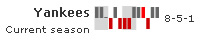
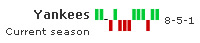
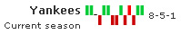

Spark Charts > Spark Win-Loss Chart > Configurations |
Here, we'll see how to configure the various facets of the chart. We'll see how to:
Let's see each one of them in detail. |
| Specify period blocks for the chart |
FusionWidgets spark win/loss chart allows you to show period blocks on the chart using colored bands. This helps you easily interpret periods on the chart. Assuming each game occurred once a week, if we want to show 3 weeks period block on the chart, we can set: <chart ... periodLength='3' periodColor='CCCCCC' periodAlpha='50'> Here, we've set periodLength='3' as we've specified weekly data - so, 3 data points make 3 weeks. This will result in: |
|  |
| When specifying periods, you just need to make sure that your period length is always less than the number of data points that you've specified, as period length is directly numbered on data points. |
| Configure win, loss & draw colors |
You can configure the color for bars indicating win, loss & draw using: <chart ... winColor='00CC33' lossColor='FF0000' drawColor='000000' ...> This will result in: |
|  |
| Configuring bar color for scoreless matches |
FusionWidgets spark win/loss chart allows you to highlight matches that a team won/lost but one side didn't score at all. This can be done using: <chart .... scoreLessColor='FF0000' ..> Here, we've added scoreless='1' attribute to <set> element and specified red color as the fill color for all matches with no scores. |
|  |
| As you can see above, there's one bar (winning bar) colored in red indicating that the other side couldn't score in that match. |
| Hiding chart value |
You can opt to hide the chart value by setting: <chart ... showValue='0' ...> This will result in: |